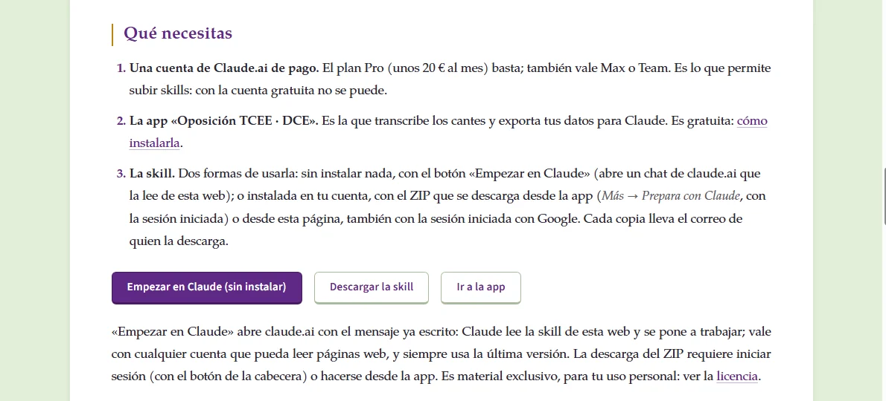
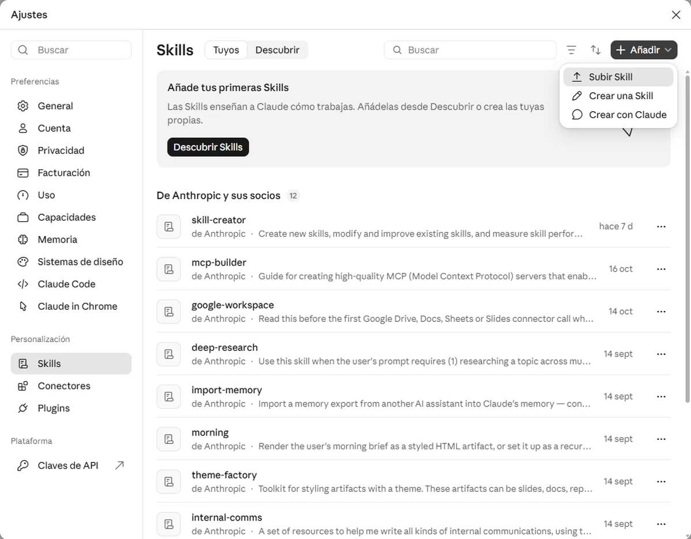
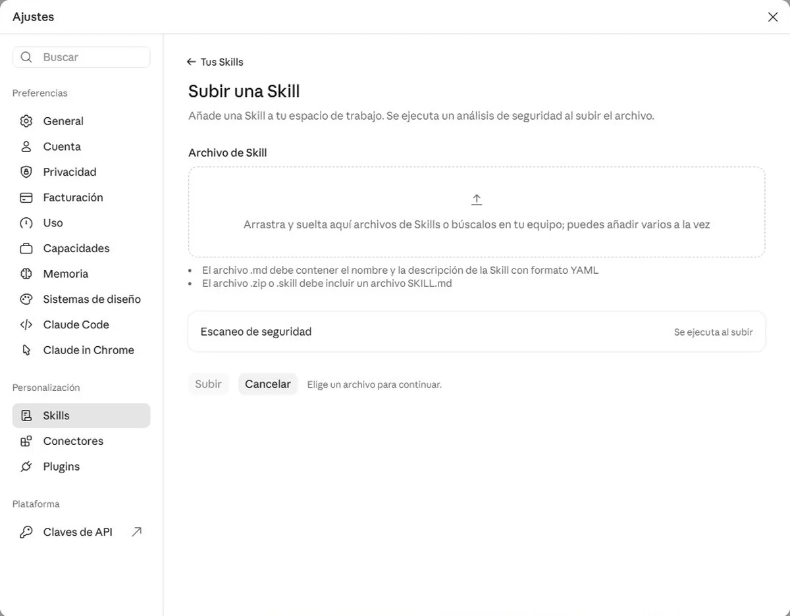
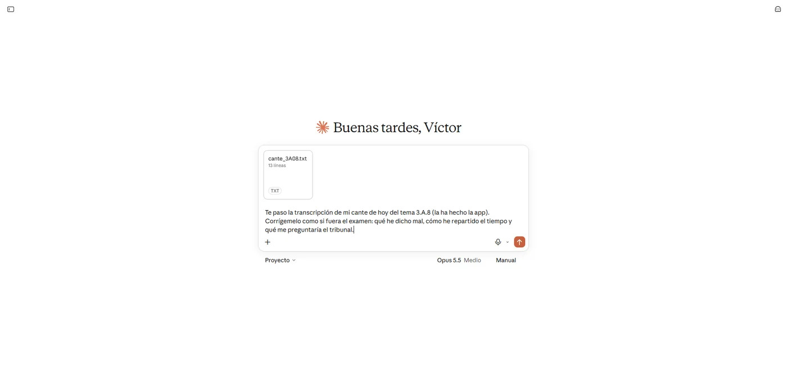

Prepara con Claude Exclusivo
 Funciona con Claude, la IA de Anthropic.
Funciona con Claude, la IA de Anthropic.
Prepara con Claude es un equipo de preparación con inteligencia artificial para la oposición a Técnico Comercial y Economista del Estado (TCEE) y a Diplomado Comercial del Estado (DCE). Es una skill de Claude, la IA de Anthropic: un fichero ZIP que subes a tu propia cuenta de Claude.ai y que le da el temario de esta web, los criterios con los que se corrige un cante y un dictamen, y la forma de leer los datos que exporta la app. A partir de ahí, en cualquier chat con Claude puedes pedirle que te corrija un cante, que te explique una duda viendo el temario en conjunto, que te haga el cronograma o que te pregunte como el tribunal.
Esta herramienta no sustituye a un preparador para la oposición: lo complementa. Claude corrige con el temario y cita de dónde sale cada corrección, pero es una IA y puede equivocarse. Contrasta con tu preparador lo que te sorprenda y, en caso de duda, manda su criterio.
Por qué preparar la oposición con Claude
Lo que aporta
- Corrige con tu temario. Con los temas revisados de esta web y los criterios con los que se escriben, y cita el apartado del que sale cada corrección.
- Es crítico sin ser complaciente. Devuelve un informe ordenado por lo que más te costaría en el examen, no una nota.
- Te conoce y aprende de ti. Trabaja con tus datos de la app: qué temas llevas, qué fallas en el test, cómo han ido tus cantes. En un Proyecto de Claude.ai, o con la memoria de Claude, recuerda tus cantes anteriores y ve si repites errores.
- Es dinámico. La skill se actualiza con cada tema que se revisa y con lo que piden los opositores.
- Está disponible a cualquier hora. Para un cante de madrugada o una duda en el autobús. Y te pregunta como lo haría el tribunal.
- La misma cuenta sirve para mucho más. Resumir un informe del Banco de España, practicar los idiomas del segundo ejercicio, redactar, organizar tu semana, preparar la lectura pública.
- Tus datos son tuyos. Subes lo que decides, en tu cuenta, y nada pasa por servidores de esta web.
Lo que la distingue de usar una IA «a secas»
Las objeciones habituales a preparar una oposición con una IA genérica, y qué cambia con esta skill.
- Se dice«Se inventa cosas y no cita fuentes.»
- Aquícorrige contra el temario revisado de esta web y la guía del dictamen, cita el apartado de cada corrección y, cuando un tema no está revisado, lo dice y lo marca.
- Se dice«No conoce la oposición.»
- Aquílleva dentro el programa oficial completo, cómo se cantan los temas de 30 minutos, qué valora el tribunal, el formato de cada ejercicio, las cifras de aprobados y los exámenes de test de los últimos veinte años.
- Se dice«Da respuestas genéricas.»
- Aquítrabaja con tu transcripción, tus fotos y tu JSON: el informe es de tu cante, no de «un cante».
- Se dice«No sabe cuánto tiempo he dedicado a cada parte.»
- Aquíla app transcribe con marcas de minuto y el informe compara con los tiempos previstos de cada apartado.
- Se dice«Es complaciente.»
- Aquílas instrucciones le piden lo contrario: ordenar por gravedad, decir «error de fondo» cuando lo es y no dar un 4 a un cante con dos errores de fondo.
- Se dice«No sustituye a un preparador.»
- Aquíni lo pretende: lo complementa, y el informe te manda contrastar con él lo que te sorprenda.
Qué hace
La skill reúne a varios «agentes», cada uno con una tarea. No tienes que elegir ninguno: escribes lo que quieres y Claude abre el que toca.
- Corrector de cantesLa app transcribe tu cante con marcas de minuto y lo manda a Claude con un toque; Claude lo corrige frente al tema y te dice qué arreglar primero.
- Corrector de dictámenesSube la foto o el PDF de tu dictamen de coyuntura, aunque esté a mano, y lo corrige frente a la guía del dictamen.
- Corrector de temas escritosPara los ejercicios escritos (cuarto y quinto de TCEE; primero y cuarto de DCE): foto o texto del tema y el informe de lo que falta y lo que sobra.
- Solucionador de dudasResponde viendo el temario en conjunto: el programa, los bloques, las conexiones entre temas, la notación común y los temas revisados, citando dónde se estudia cada cosa.
- Organizador del cronogramaCon tus datos de la app, reparte los temas por semanas hasta la fecha del examen y devuelve un bloque que la app importa con «Traer el tuyo».
- Simulacro de tribunalTe pregunta como lo haría el tribunal al terminar el cante, por turnos, con preguntas del tema y del resto del temario.
- Simulacro completoEl examen oral entero en una sola petición: sortea las bolas como la app, eliges, te da la hora para los 45 minutos de esquema, corrige el cante y te pregunta como el tribunal.
- Test personalDiez preguntas sobre lo que fallas: primero las oficiales de tus temas flojos, con la explicación de la web, y si faltan, nuevas al estilo oficial.
- Tarjetas de repasoDe 20 a 40 tarjetas de pregunta y respuesta de un tema, hechas con su ficha, en un fichero que la app importará al repaso espaciado.
- Informe de la semanaQué ha mejorado respecto a la semana anterior, qué error se repite, tests por tema, ritmo y horas, y las tres tareas de la semana que viene.
- ¿Qué me toca hoy?El plan del día con tu cronograma, los repasos que tocan y las dudas que dejaste pendientes.
- Ficha de repaso de tus apuntesManda tus propios apuntes y te devuelve una ficha de repaso con el formato del temario.
- Lectura de estadísticasCómo van tus tests y tus cantes, qué temas flojean y qué conviene hacer con ello.
Qué necesitas
- Una cuenta de Claude.ai de pago. El plan Pro (unos 20 € al mes) basta; también vale Max o Team. Es lo que permite subir skills: con la cuenta gratuita no se puede.
- La app «Oposición TCEE · DCE». Es la que transcribe los cantes y exporta tus datos para Claude. Es gratuita: cómo instalarla.
- La skill. Dos formas de usarla: sin instalar nada, con el botón «Empezar en Claude» (abre un chat de claude.ai que la lee de esta web); o instalada en tu cuenta, con el ZIP que se descarga desde la app (Más → Prepara con Claude, con la sesión iniciada) o desde esta página, también con la sesión iniciada con Google. Cada copia lleva el correo de quien la descarga.
Hasta la próxima versión de la app. Lo que esta página cita de la app (Transcribir, Enviar a Claude, Más → Prepara con Claude) llega en la siguiente versión. Mientras tanto: descarga la skill desde esta página; exporta tus datos en Más → Cuenta → «Exportar datos (JSON)» (Claude lo entiende igual); y, para el cante, graba con la app y pega la transcripción que saques con el dictado del móvil o del ordenador. Sin marcas de minuto, Claude corrige el contenido y la estructura, pero no los tiempos.
«Empezar en Claude» abre claude.ai con el mensaje ya escrito: Claude lee la skill de esta web y se pone a trabajar; vale con cualquier cuenta que pueda leer páginas web, y siempre usa la última versión. La descarga del ZIP requiere iniciar sesión (con el botón de la cabecera) o hacerse desde la app. Es material exclusivo, para tu uso personal: ver la licencia.
Cómo instalarla
Instalarla tiene dos ventajas sobre «Empezar en Claude»: Claude la reconoce sola en cualquier chat (no hace falta el botón ni pegar nada) y funciona aunque no pueda leer páginas web en ese momento. Son tres pasos, una sola vez: después se mantiene al día sola.
- Descarga el ZIP con el botón de arriba o desde la app (Más → Prepara con Claude). No lo descomprimas: se sube tal cual.
- Súbelo a Claude. En claude.ai, abre Ajustes (en el menú de tu nombre, abajo a la izquierda) → Skills → botón Añadir → Subir Skill; elige el ZIP y pulsa Subir. Claude hace un análisis de seguridad del fichero y la skill aparece en la pestaña «Tuyos», ya activada. (Si la interfaz está en inglés: Settings → Skills → Add → Upload skill.)
- Úsala. Abre un chat y escribe lo que quieras: «corrige este cante», «hazme el cronograma», «explícame la curva de Phillips». Adjunta tus ficheros si hacen falta. No tienes que nombrar la skill: Claude la reconoce por lo que pides.




Si prefieres no instalar nada
Pulsa Empezar en Claude: abre un chat con el mensaje ya escrito y Claude lee la skill directamente de esta web (siempre la última versión). Guarda ese enlace en favoritos y úsalo cada vez; o, mejor, crea en claude.ai un Proyecto «Oposición» y pega ese mismo mensaje en sus instrucciones: todos los chats del proyecto empiezan ya con la skill y con memoria de los anteriores. También puedes adjuntar el ZIP a un chat y escribir «usa la skill de este ZIP»: vale para esa conversación.
En Claude Desktop o Claude Code
Dile a Claude «instala esta skill» con el ZIP adjunto y lo hace. En Claude Code, descomprime el ZIP en .claude/skills/ de tu carpeta de la oposición.
Cómo corregir un cante
- En la app, ve a Cantar y activa «Transcribir» en lugar de «Grabar»: el micrófono solo hace una cosa, o graba o transcribe. La transcripción lleva marcas de minuto, para que Claude sepa cuánto has dedicado a cada apartado.
- Canta el tema como siempre. Al terminar, guárdalo en el diario y pulsa «Enviar a Claude»: la app prepara un fichero de texto con la transcripción y los datos del cante.
- En Claude, adjunta ese fichero (
.txt) y escribe «corrige este cante». Si quieres, añade qué te preocupa («me he perdido en el segundo apartado», «no sé si el modelo está bien explicado»).
Claude devuelve el informe en el chat y, además, en PDF con la estética de la oposición (morado y dorado en TCEE, granate y azul en DCE), para guardarlo junto a la transcripción. Tiene ocho secciones, siempre en el mismo orden, para que sepas dónde mirar:
- En tres líneas: lo principal, para leer de un vistazo.
- Estructura y tiempos: si el orden es el del tema y cuántos minutos has dedicado a cada apartado frente a los que tocan.
- Errores de contenido: qué has dicho, qué es lo correcto y por qué, con el apartado del tema del que sale.
- Omisiones y sobras: lo que faltaba y lo que no hacía falta.
- Expresión y pizarra: muletillas, frases sin terminar y qué habría que dibujar en la pizarra.
- Preguntas de comprobación: para que compruebes que ahora sí lo sabes.
- Lo que te preguntaría el tribunal: preguntas del tema y del resto del temario, como las del examen.
- Para la app: la valoración y los comentarios del cante, listos para copiarlos al diario.
Cómo corregir un dictamen
Haz una foto a cada hoja del dictamen, o pásalo a PDF, aunque esté escrito a mano: Claude lo lee. Si tienes el cuadernillo de datos con el que lo hiciste, adjúntalo también; así comprueba las cifras que citas. Escribe «corrige este dictamen» y, si quieres, de qué país y de qué fecha es. Lo corrige frente a la guía del dictamen de coyuntura: estructura, uso de los datos, diagnóstico, política económica recomendada y redacción, con lo que arreglarías primero.
Cómo hacer el cronograma
- En la app, ve a Más → Prepara con Claude y pulsa «Exportar mis datos para Claude». Se crea un fichero JSON con tu oposición, tus temas, tus cantes, tus tests y tu cronograma actual (si lo tienes).
- En Claude, sube ese fichero y pide el cronograma: «hazme el cronograma hasta el examen», «replanifica: esta semana no he podido estudiar» o «reparte los temas que me faltan en seis semanas».
- Claude te explica el plan por semanas y termina con un bloque de líneas con fecha y códigos de tema. Cópialo entero.
- En la app, ve a Cronograma → «Traer el tuyo» y pégalo (o Más → Prepara con Claude → «Traer cronograma de Claude»). La app te lo enseña antes de crearlo, para que lo revises.
Dudas, tribunal, test personal y más
El resto de agentes no necesitan nada especial: escribe lo que quieras en el chat, con o sin tus ficheros de la app. Algunos ejemplos de lo que puedes pedir:
- «¿En qué tema se estudia el modelo de Mundell-Fleming y con qué otros temas se relaciona?»
- «¿Qué diferencia hay entre la notación del tema de crecimiento y la del de ciclos?»
- «Hazme un simulacro completo del tercer ejercicio.»
- «Pregúntame como el tribunal sobre el tema que acabo de cantar.» En el móvil, con el modo de voz de la app de Claude, puedes contestar hablando: te pregunta de una en una y espera tu respuesta.
- «Hazme un test de diez preguntas sobre lo que más fallo» (con el JSON de la app).
- «¿Qué me toca hoy?» o «¿Qué me toca esta semana?»
- «Hazme una ficha de repaso con estos apuntes» (adjuntando tus propios apuntes).
- «¿Cómo voy? ¿Qué tal mis tests y mis cantes de este mes?» o «¿Cómo ha ido la semana?»
- «Hazme 25 tarjetas de repaso del 3.A.8.»
- «¿Qué llevo y qué hago el día del examen?» o «¿Qué dibujo en la pizarra en el tema de la demanda?»
En todos los casos Claude cita de dónde sale lo que dice (tema, ficha, guía o notación común) y, si un tema aún no está revisado, lo avisa y corrige con el índice del temario y conocimiento general.
Si eres preparador
La skill también sirve para preparar la clase: dile que eres preparador y mándale los cantes, dictámenes o datos que tus alumnos te hayan pasado. Corrige igual, pero el informe se dirige a ti: qué trabajar en la próxima clase y qué preguntarle a cada alumno, con la fuente del temario. Cada alumno va en su informe, sin comparaciones entre ellos, y sus datos siguen siendo suyos: los exporta cada uno desde su app y decide qué te pasa.
Tu carpeta de la oposición
Una carpeta ordenada en el ordenador, con todo lo de la oposición, hace que Claude trabaje mejor: encuentra el tema que toca, guarda cada informe junto al cante que corrige y no hay que subir los mismos ficheros cada vez. Esta es la estructura que recomendamos; adáptala, pero mantén los códigos de tema en los nombres (3A08), que es lo que la skill y la app usan para encontrar las cosas.
Oposición TCEE/ 0_organizacion/ convocatoria, Excel de estrategia, exportación de la app, cronograma 1_primer_ejercicio/1_test/ exámenes oficiales de test y tus simulacros 1_primer_ejercicio/2_dictamen/ esquema del dictamen, exámenes; simulacros/ con tus dictámenes e informes 2_segundo_ejercicio/ idiomas 3_tercer_ejercicio/A/3A08/ el tema en PDF y Word, tus apuntes y cantes/ (transcripciones e informes) 3_tercer_ejercicio/B/… 4_cuarto_ejercicio/… 5_quinto_ejercicio/… prepara-con-claude.zip la skill
Con un solo prompt. La skill lleva un script que crea esta carpeta y baja a cada sitio los materiales públicos de la web (los 177 temas en PDF y Word, la organización, los exámenes oficiales, el esquema del dictamen). En Claude Code o Claude Desktop con acceso a ficheros basta con pedir: «Crea mi carpeta de la oposición en Documentos/Oposición TCEE con todos los materiales de la web». Los materiales exclusivos no se descargan: están en la app y dentro de la skill.
Desde esa carpeta puedes trabajar de tres formas:
- Un Proyecto de Claude.ai (en el navegador o en el móvil) con la skill activada y los ficheros de
0_organizacioncomo conocimiento: así no los subes cada vez. Crea el proyecto «Oposición» y usa siempre ese. - Claude Desktop (Windows y Mac) con acceso a la carpeta: dale permiso sobre
Oposición TCEEy pídele «corrige el cante de hoy» o «guarda el informe junto a la transcripción»; lee y escribe ahí. La skill se instala igual que en Claude.ai, con la misma cuenta. - Claude Code en la terminal: abre una terminal en la carpeta y escribe
claude, con el ZIP descomprimido en.claude/skills/. Es la forma más cómoda de que los informes queden guardados solos en la carpetacantes/de cada tema.
Dos ejemplos de lo que le puedes pedir cuando trabaja en la carpeta:
- «Corrige
3_tercer_ejercicio/A/3A08/cantes/2026-11-03.txty guarda el informe en PDF al lado.» - «Lee los tres últimos informes de
cantes/de los temas que he cantado este mes y dime qué error se repite.»
Los informes llegan en PDF con la estética de la oposición (morado y dorado en TCEE, granate y azul en DCE) y en Markdown, para que los guardes o los pegues donde quieras. Los documentos de la skill no se copian a la carpeta: lo que se guarda son tus informes, tus cronogramas y tus fichas.
El conector: sin exportar nada
El conector «Prepara con Claude» une tu cuenta de Claude con tu cuenta de la app. Con él Claude lee tus cantes, tus tests y tu cronograma directamente, y puede proponerte el cronograma o guardar el informe de un cante en la app sin que copies ni subas nada. Solo lee lo tuyo, con tu propia sesión de Google, y antes de escribir en la app siempre te lo pregunta.
- En claude.ai, abre Ajustes → Conectores → Añadir conector personalizado. Nombre: «Prepara con Claude». URL:
https://prepara-con-claude.vgutierrezmarcos.workers.dev/mcp. - Pulsa Conectar: se abre una página de esta web para entrar con la misma cuenta de Google que usas en la app, y vuelves a Claude ya conectado.
- Pide «lee mi progreso», «corrige mi último cante» o «hazme el cronograma y guárdalo en la app». La skill usa el conector sola cuando lo ve activo.
Para desconectarlo, quita el conector en los ajustes de claude.ai o pulsa «Desconectar Claude» en Más → Cuenta de la app. Qué guarda el conector y durante cuánto tiempo: política de privacidad, apartado 2.3. En Claude Code: claude mcp add --transport http prepara-con-claude https://prepara-con-claude.vgutierrezmarcos.workers.dev/mcp.
Privacidad
Lo que subes a Claude lo decides tú, fichero a fichero, y se rige por las condiciones de Anthropic. La app no envía nada por su cuenta: «Enviar a Claude» y «Exportar mis datos para Claude» solo preparan un fichero que compartes o subes tú. La transcripción del cante la hace tu móvil (en algunos, el servicio de voz de Google); la grabación no sale del dispositivo. Ni Víctor ni Manuel ven lo que subes ni lo que Claude te responde. Más detalles en la política de privacidad.
Licencia
Exclusivo La skill y el material que lleva dentro (temas revisados, fichas, guía del dictamen y notación común) son material exclusivo: puedes usarlos para tu preparación personal en tu propia cuenta de Claude. No se pueden subir a otras plataformas, bots ni servicios, ni usarse para entrenar modelos de IA. Ver las condiciones de uso de los materiales.
Vídeo
Cómo instalar la skill y corregir tu primer cante, en pocos minutos.
Preguntas frecuentes
¿Sirve sin la app?
Sí, para casi todo: puedes escribir tus dudas, pegar un cante que hayas transcrito por tu cuenta, subir la foto de un dictamen o pedir un simulacro. La app aporta dos cosas: la transcripción del cante con marcas de minuto y la exportación de tus datos (cronograma, cantes, tests), que es lo que permite a Claude hacer un cronograma a tu medida, un test de tus fallos o leer tus estadísticas.
¿Funciona con Claude gratis?
No. Subir skills a Claude.ai requiere un plan de pago (Pro, unos 20 € al mes; también Max o Team). La skill y el material son gratuitos.
¿Puede equivocarse?
Sí. Es una inteligencia artificial: corrige con el temario de la web y cita de dónde sale cada corrección, pero puede equivocarse, sobre todo en los temas que aún no están revisados. Por eso cada informe termina con el aviso de que no sustituye a un preparador: lo complementa. Contrasta con él lo que te sorprenda y, en caso de duda, manda su criterio.
¿Alguien ve mis datos?
La app no envía nada a Claude por su cuenta: los ficheros los subes tú, a tu propia cuenta de Claude, y se rigen por las condiciones de Anthropic. Ni Víctor ni Manuel ven lo que subes ni lo que Claude te responde.
¿Sirve para la oposición a DCE?
Sí. La skill conoce el programa y las reglas de las dos oposiciones. Si dices que preparas DCE, o si el fichero de la app lleva «Oposición DCE», corrige y planifica con el programa de Diplomado Comercial del Estado.
¿Se actualiza sola?
Sí. Cada vez que la usas, la skill comprueba en esta web si hay una versión nueva. Si la hay, lee de la web las instrucciones y los contenidos al día (un tema revisado nuevo, una ficha corregida, un agente mejorado) y trabaja con ellos sin que hagas nada: la copia subida a Claude.ai es solo el punto de partida. Con «Empezar en Claude» ni siquiera eso: cada chat lee la última versión. Solo haría falta volver a subir el ZIP si algún día cambiara el nombre o la descripción con la que Claude la reconoce, y lo diríamos aquí.
¿Y en Claude Code o Claude Desktop?
Sí: la skill es la misma carpeta. Dile a Claude «instala esta skill» con el ZIP adjunto y lo hace. En Claude Code, descomprime el ZIP en .claude/skills/ de tu carpeta de la oposición (o en ~/.claude/skills/ para tenerla en todas). Funciona igual que en claude.ai y, si le das acceso a tu carpeta de la oposición, guarda los informes junto a cada cante.